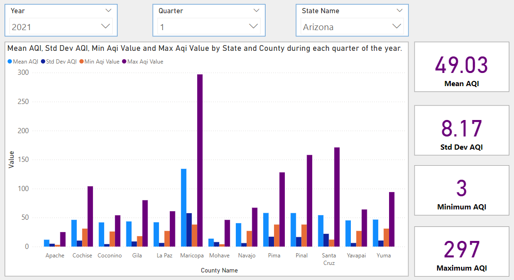
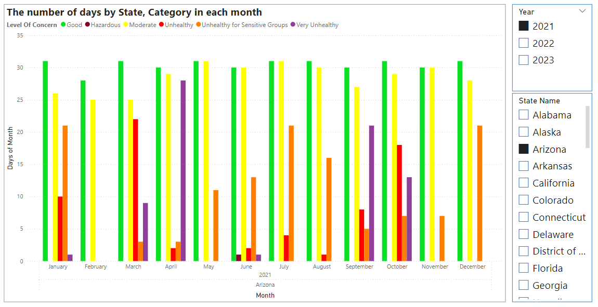
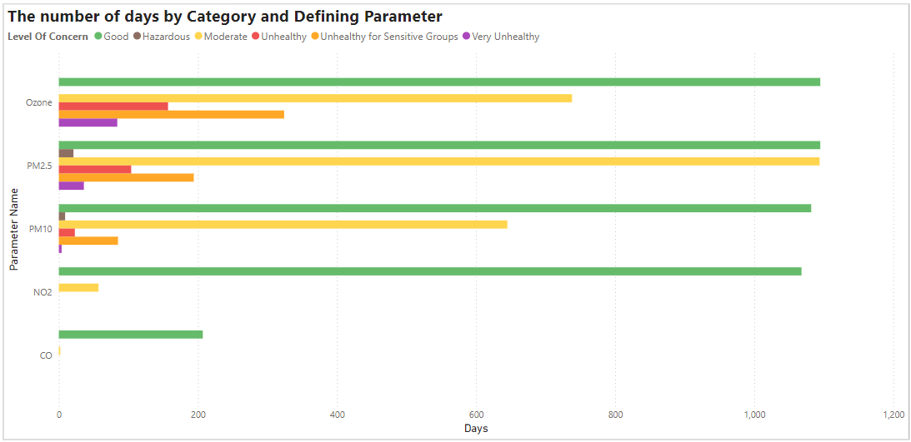

BI - Data Warehouse - SSIS - SSAS - PowerBI - ETL - OLAP - Data Modeling - SQLServer
COURSE PROJECT - Team size: 4



Design and implement a data warehouse system to collect, transform, and analyze Air Quality Index (AQI) data across multiple states and time periods.